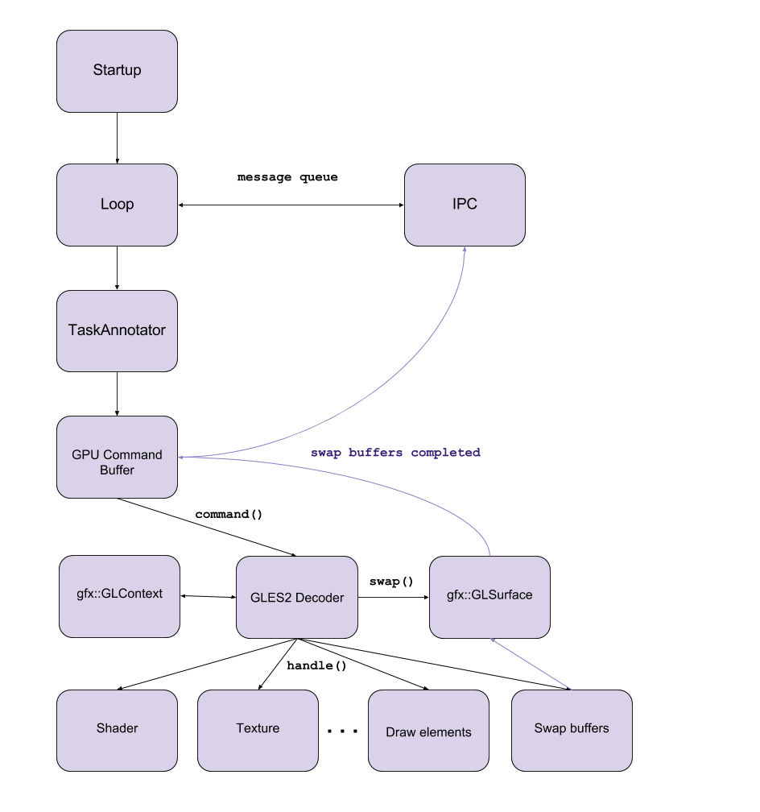

GPU process - detailed architecture overview

Startup
the entry point for the GPU process
Loop
MainMessageLoop
is used to process events for a particular thread
puts the incoming messages, tasks to a queue
pops a task from the queue and starts it
strong relationship with the IPC communication framework
has task reentrancy protection
second task cannot be started until first task finishes
IPC
framework which is used for inter-process communication
connects directly to the MainMessageLoop
provides communication channels through which the messages can be sent
message creating, sending and receiving
asynchronous message handling
TaskAnnotator
all incoming tasks are going through a TaskAnnotator which annotates the task before the execution
implements common debug annotations for posted tasks. This includes data such as task origins, queueing durations and memory usage
runs a previously queued task
GPU Command Buffer
implements IPC methods (Receive, Send)
handles messages (Set/Get buffer, Flush, Create/Destroy Images, etc) and sends commands
gfx::GLSurface
encapsulates a surface that can be rendered to with GL, hiding platform specific management
gfx::GLContext
encapsulates an OpenGL context, hiding platform specific management
GLES2 Decoder
decodes GLES2 commands from Command Buffer
calls GL methods
Shader, Texture, …, Draw elements
calls actual OpenGL functions
compiles and executes shader codes
manipulates textures (bind, remove, setTarget, etc)
other calls manage the GLContext’s state
Swap buffers
handles frame swaps
if the buffer is offscreen then it copies the rendered frame to another framebuffer
Sources:
https://code.google.com/p/chromium/codesearch#chromium/src/base/message_loop/message_loop.h
https://code.google.com/p/chromium/codesearch#chromium/src/base/debug/task_annotator.h&q=task_annotator&sq=package:chromium&type=cs&l=1
https://code.google.com/p/chromium/codesearch#chromium/src/cc/raster/task_graph_runner.h&q=taskgraph&sq=package:chromium&type=cs&l=42
https://code.google.com/p/chromium/codesearch#chromium/src/content/common/gpu/gpu_command_buffer_stub.h&q=gpucommandbufferstub&sq=package:chromium&type=cs&l=92